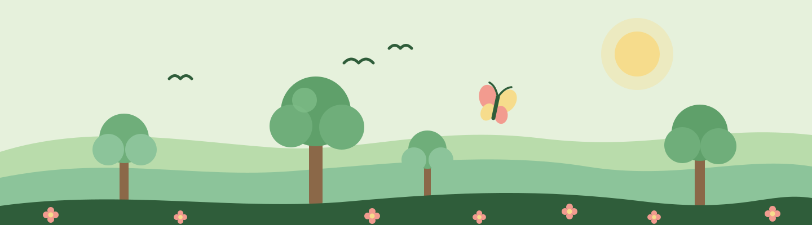

Biodiversidade
Por que preservar a natureza perto de você
A natureza não está presente apenas em florestas distantes. Observar as plantas e os animais da sua região pode ser um primeiro passo para conhecer a biodiversidade e participar da sua conservação.
O que é biodiversidade?
Biodiversidade é a variedade da vida. Ela inclui as diferenças entre os indivíduos de uma espécie, a diversidade de espécies e os ecossistemas dos quais fazem parte.
Por isso, conservar a biodiversidade envolve tanto os seres vivos quanto os ambientes e as relações que permitem sua existência.
Conheça a natureza da sua região
Comece observando uma praça, um parque ou outra área verde próxima. Quais plantas você reconhece? Quais aves, insetos e outros animais aparecem? Anotar essas observações pode tornar o aprendizado mais concreto.
Procure materiais educativos de instituições de pesquisa, órgãos ambientais e espaços de educação ambiental para conhecer melhor as espécies e os ambientes locais.
Entenda o papel das áreas protegidas
Parques e outras categorias de unidades de conservação fazem parte das estratégias de proteção da natureza no Brasil.
Cada unidade possui objetivos e regras próprios. Antes de uma visita, consulte os canais oficiais para verificar se a visitação é permitida, quais atividades estão disponíveis e quais orientações devem ser seguidas.
Transforme curiosidade em participação
Você pode começar conhecendo os projetos ambientais da sua cidade e conversando sobre o tema na escola ou no bairro.
- Procure atividades de educação ambiental em instituições da região.
- Consulte as regras dos espaços naturais antes de visitá-los.
- Conheça os objetivos e as condições de participação em projetos de voluntariado.
- Compartilhe informações acompanhadas das fontes utilizadas.
Escolha uma atividade possível para sua rotina. Aprender sobre um ambiente próximo é uma forma de começar a se envolver com sua conservação.
Fontes e referências
Texto educativo elaborado para este projeto com apoio nas referências abaixo.